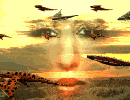
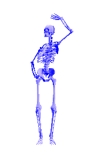

The
Sonoran Desert Toad
The
Sonoran Desert Toad
The
Sonoran Desert Toad
Bufo alvarius
|
The Way of the Shaman by Michael Harner
Chapter 1 |
I became aware of my brain. I felt - physically - that it had become compartmentalized into four separate and distinct levels. At the uppermost surface was the observer and commander, which was conscious of the condition of my body, and was responsible for the attempt to keep my heart going. It perceived, but purely as a spectator, the visions emanating from what seemed to be the nether portions of my brain. Immediately below the topmost level I felt a numbed layer, which seemed to have been put out of commission by the drug-it just wasn't there. The next level down was the source of my visions, including the soul boat.
Now I was virtually certain I was about to die. As I tried to accept my fate, an even lower portion of my brain began to transmit more visions and information. I was "told" that this new material was being presented to me because I was dying and therefore "safe" to receive these revelations. These were the secrets reserved for the dying and the dead, I was informed. I could only very dimly perceive the givers of these thoughts: giant reptilian creatures reposing sluggishly at the lowermost depths of the back of my brain, where it met the top of the spinal column. I could only vaguely see them in what seemed to be gloomy, dark depths. Then they projected a visual scene in front of me.

First they showed me the planet Earth as it was eons ago, before there was any life on it. I saw an ocean, barren land, and a bright blue sky. Then black specks dropped from the sky by the hundreds and landed in front of me on the barren landscape. I could see that the "specks" were actually large, shiny, black creatures with stubby pterodactyl-like wings and huge whale-like bodies. Their heads were not visible to me. They flopped down, utterly exhausted from their trip, resting for eons. They explained to me in a kind of thought language that they were fleeing from something out in space. They had come to the planet Earth to escape their enemy. The creatures then showed me how they had created life on the planet in order to hide within the multitudinous forms and thus disguise their presence. Before me, the magnificence of plant and animal creation and speciation-hundreds of millions of years of activity-took place on a scale and with a vividness impossible to describe. I learned that the dragon-like creatures were thus inside of all forms of life, including man. They were the true masters of humanity and the entire planet, they told me. We humans were but the receptacles and servants of these creatures. For this reason they could speak to me from within myself.
These revelations, welling up from the depths of my mind, alternated with visions of the floating galley, which had almost finished taking my soul on board. The boat with its blue-jay headed deck crew was gradually drawing away, pulling my life force along as it headed toward a large fjord flanked by barren, worn hills. I knew I had only a moment more to live. Strangely, I had no fear of the bird-headed people; they were welcome to have my soul if they could keep it. But I was afraid that somehow my soul might not remain on the horizontal plane of the fjord but might, through processes unknown but felt and dreaded, be acquired or re-acquired by the dragon-like denizens of the depths. I suddenly felt my distinctive humanness, the contrast between my species and the ancient reptilian ancestors. I began to struggle against returning to the ancient ones, who were beginning to feel increasingly alien and possibly evil.
Each heart beat was a major undertaking. I turned to human help. With an unimaginable last effort, I barely managed to utter one word to the Indians: "Medicine!" I saw them rushing around to make an antidote, and I knew they could not prepare it in time. I needed a guardian who could defeat dragons, and I frantically tried to conjure up a powerful being to protect me against the alien reptilian creatures. One appeared before me; and at that moment the Indians forced my mouth open and poured the antidote into me. Gradually, the dragons disappeared back into the lower depths; the soul boat and the fjord were no more. I relaxed with relief. The antidote radically eased my condition, but it did not prevent me from having many additional visions of a more superficial nature. These were manageable and enjoyable. I made fabulous journeys at will through distant regions, even out into the Galaxy; created incredible architecture; and employed sardonically grinning demons to realize my fantasies. Often I found myself laughing aloud at the incongruities of my adventures. Finally, I slept.
Rays of sunlight were piercing the holes in the palm-thatched roof when I awoke. I was still lying on the bamboo platform, and I heard the normal, morning sounds all around me: the Indians conversing, babies crying, and a rooster crowing. I was surprised to discover that I felt refreshed and peaceful. As I lay there looking up at the beautiful woven pattern of the roof, the memories of the previous night drifted across my mind. I momentarily stopped myself from remembering more in order to get my tape recorder from a duffle bag. As I dug into the bag, several of the Indians greeted me, smiling. An old woman, Tom�s' wife, gave me a bowl of fish and plantain soup for breakfast. It tasted extraordinarily good. Then I went back to the platform, eager to put my night's experiences on tape before I forgot anything. The work of recall went easily except for one portion of the trance that I could not remember. It remained blank, as though a tape had been erased. I struggled for hours to remember what had happened in that part of the experience, and I virtually wrestled it back into my consciousness. The recalcitrant material turned out to be the communication from the dragon-like creatures, including the revelation of their role in the evolution of life on this planet and their innate domination of living matter, including man. I was highly excited at rediscovering this material, and could not help but feel that I was not supposed to be able to bring it back from the nether regions of the mind. I even had a peculiar sense of fear for my safety, because I now possessed a secret that the creatures had indicated was only intended for the dying.
I immediately decided to share this knowledge with others so that the "secret" would not reside in me alone, and my life would not be in jeopardy. I put my outboard motor on a dugout canoe and left for an American evangelist mission station nearby. I arrived about noon. The couple at the mission, Bob and Millie, were a cut above the average evangelists sent from the United States: hospitable, humorous, and compassionate. I told them my story. When I described the reptile with water gushing out of his mouth, they exchanged glances, reached for their Bible, and read to me the following line from Chapter 12 in the Book of Revelation: And the serpent cast out of his mouth water as a flood.... They explained to me that the word "serpent" was synonymous in the Bible with the words "dragon" and "Satan." I went on with my narrative. When I came to the part about the dragon-like creatures fleeing an enemy somewhere beyond the Earth and landing here to hide from their pursuers, Bob and Millie became excited and again read me more from the same passage in the Book of Revelation: And there was war in heaven. Michael and his angels fought against the dragon, and the dragon and his angels fought back. And prevailed not; neither was their place found any more in heaven. And the great dragon was cast out, that old serpent, called the Devil and Satan, which deceiveth the whole world: he was cast out into the Earth, and his angels with him.
I listened with surprise and wonder. The missionaries, in turn, seemed to be awed by the fact that an atheistic anthropologist, by taking the drink of the "witch doctors," could apparently have revealed to him some of the same holy material in the Book of Revelation. When I had finished my account, I was relieved to have shared my new knowledge, but I was also exhausted. I fell asleep on the missionaries' bed, leaving them to continue their discussion of the experience. That evening, as I returned to the village in my canoe, my head began to throb in rhythm with the noise of the outboard motor; I thought I was going mad; I had to stick my fingers in my ears to avoid the sensation. I slept well, but the next day I noticed a numbness or pressure in my head.
I was now eager to solicit a professional opinion from the most supernaturally knowledgeable of the Indians, a blind shaman who had made many excursions into the spirit world with the aid of the ayahuasca drink. It seemed only proper that a blind man might be able to be my guide to the world of darkness. I went to his hut, taking my notebook with me, and described my visions to him segment by segment. At first I told him only the highlights; thus, when I came to the dragon-like creatures, I skipped their arrival from space and only said, "There were these giant black animals, something like great bats, longer than the length of this house, who said that they were the true masters of the world." There is no word for dragon in Conibo, so "giant bat" was the closest I could come to describe what I had seen. He stared up toward me with his sightless eyes, and said with a grin, "Oh, they're always saying that. But they are only the Masters of Outer Darkness." He waved his hand casually toward the sky. I felt a chill along the lower part of my spine, for I had not yet told him that I had seen them, in my trance, coming from outer space. I was stunned. What I had experienced was already familiar to this barefoot, blind shaman.
